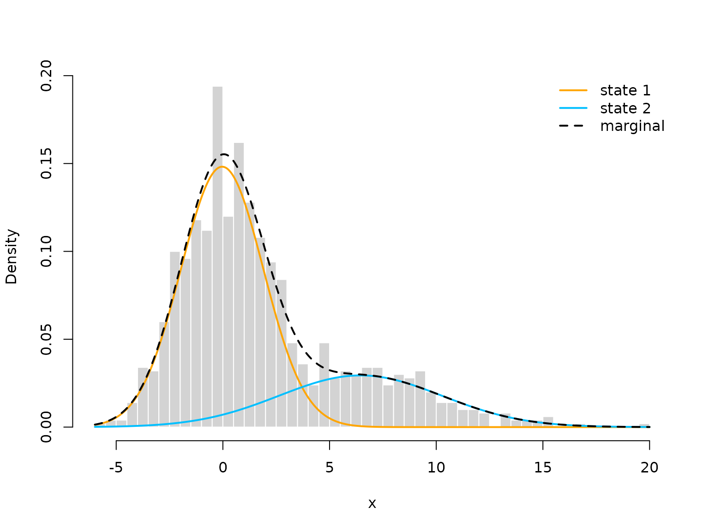

The R package LaMa provides convenient R wrapper
functions for the forward algorithm that can be used to
fit a wide range of latent Markov models like
hidden Markov models (HMMs), hidden semi-Markov
models (HSMMs) and state space models (SSMs)
via direct numerical maximum likelihood estimation. To
make writing bespoke likelihood functions faster and more convenient, it
also includes many auxiliary functions that to be used in the likelihood
computation.
The three main families of functions therefore are
forward, tpm and stationary and
we showcasse the simplest versions in the following introductory
example.
Introductory example: Homogeneous HMM
In this vignette, we start from the most simple HMM we can think of. Such a basic -state HMM is a doubly stochastic process in discrete time, i.e. in such a model observations are generated by one of possible distributions , with an unobserved -state Markov chain selecting which distribution is active at any given time point. Therefore, HMMs can be interpreted as correlated mixture models and are very popular accross a wide range of disciplines like ecology, sports, finance where time-series data with underlying sequential dependencies are to be analyzed. They statements above already hint at the two main assumptions in such a model, namely
- (Markov assumption)
- (conditional independence assumption).
The hidden state process is described by a Markov chain, as such a
stochastic process can easily be characterized by its initial
distribution
and the one-step transition probabilities
which are typically summarized in the so-called transition
probability matrix (t.p.m.)
where row
is the conditional one-step ahead distribution of the state process
given that the current state is
.
For HMMs with homogeneous transition probabilities, we often assume
stationarity of the underlying Markov chain, as
well-behaved Markov chains converge to a unique stationary distribution.
When we e.g. observe an animial and model its behavioral states by a
Markov chain, it is reasonable to assume that the chain has been running
for a long time prior to our observation and thus already converged to
its stationary distribution. This distribution (which we call
)
can be computed by solving the system of equations
which is implemented in the function
stationary(). For stationary HMMs, we then replace the
initial distribution
by this stationary distribution.
For the conditional distributions of the observations , a typical choice would be some kind of parametric family like normal or gamma distributions with state-specific means and standard deviations. For a more exhaustive description of such models see Zucchini, MacDonald, and Langrock (2016).
Generating data from a 2-state HMM
Here we can already use stationary() to compute the
stationary distribution.
# parameters
mu = c(0, 6)
sigma = c(2, 4)
Gamma = matrix(c(0.95, 0.05, 0.15, 0.85), nrow = 2, byrow = TRUE)
delta = stationary(Gamma) # stationary HMM
# simulation
n = 1000
set.seed(123)
s = x = rep(NA, n)
s[1] = sample(1:2, 1, prob = delta)
x[1] = rnorm(1, mu[s[1]], sigma[s[1]])
for(t in 2:n){
# we draw the next state conditional on the last one
s[t] = sample(1:2, 1, prob = Gamma[s[t-1],])
# we draw the observation conditional on the current state
x[t] = rnorm(1, mu[s[t]], sigma[s[t]])
}
color = c("orange", "deepskyblue")
plot(x[1:200], bty = "n", pch = 20, ylab = "x",
col = color[s[1:200]])
Writing the negative log-likelihood function
Inference for HMMs is more difficult compared to e.g. regression modeling, as the observations are not independent. We would like to estimate model parameters via maximum likelihood estimation, due to the nice properties possessed by the maximum likelihood estimator. However, computing the HMM likelihood for observed data points is not a trivial task, as we do not observe the underlying states. We thus need to sum out all possible state sequences which would be infeasible for general state processes. We can, however, exploit the Markov property and thus calculate the likelihood recursively as a matrix product using the so-called forward algorithm. In closed form, the HMM likelihood then becomes
where
and
are as defined above,
is a diagonal matrix with state-dependent densities or probability mass
functions
on its diagonal and
is a row vector of ones with length
.
All model parameters are here summarized in the vector
.
Being able to evaluate the likelihood function, it can be numerically
maximized by popular optimizers like nlm() or
optim().
The algorithm explained above suffers from numerical underflow and
for
only moderately large the likelihood is rounded to zero. Thus, one can
use a scaling strategy, detailed by Zucchini,
MacDonald, and Langrock (2016), to
avoid this and calculate the log-likelihood recursively. This version of
the forward algorithm is implemented in LaMa and written in
C++. For HMMs we often need to constrain the domains of several of the
model parameters in
(i.e. positive standard deviations or a transition probability matrix
with elements between 0 and 1 and rows that sum to one). One could now
resort to contraint numerical optimziation but in practice one usually
maximizes the likelihood w.r.t. a transformed version (to the real
number line) of the model parameters by using suitable invertible and
differenentiable link functions, which we denote here as
(also in the code). For example we use the log-link for parameters that
need to be strictly positive and the multinomial logistic link for the
transition probability matrix. While the former can easily be coded by
hand, the latter is implemented by the functions tpm() and
tpm_g() for convenience and computational speed. For
efficiency, it is also advisable to evaluate the state-dependent
densities (or probability mass functions) vectorized outside the
recursive forward algorithm. This results in a matrix containing the
state-dependent likelihoods for each data point conditioned on each
state (i.e. of dimension c(n,N)) which, throughout the
package, we call the allprobs matrix.
In this example, within the negative log-likelihood function we build
the homogeneous transition probability matrix using the
tpm() function and compute the stationary distribution of
the Markov chain using stationary(). We then build the
allprobs matrix and calculate the log-likelihood using
forward() in the last line. It is returned negative such
that the function can be numerically minimized by
e.g. nlm().
mllk = function(theta.star, x){
# parameter transformations for unconstraint optimization
Gamma = LaMa::tpm(theta.star[1:2])
delta = LaMa::stationary(Gamma) # stationary HMM
mu = theta.star[3:4]
sigma = exp(theta.star[5:6])
# calculate all state-dependent probabilities outside the forward algorithm
allprobs = matrix(1, length(x), 2)
for(j in 1:2){ allprobs[,j] = stats::dnorm(x, mu[j], sigma[j]) }
# return negative for minimization
-LaMa::forward(delta, Gamma, allprobs)
}Fitting an HMM to the data
theta.star = c(-1,-1,1,4,log(1),log(3))
# initial transformed parameters: not chosen too well
s = Sys.time()
mod = nlm(mllk, theta.star, x = x)
Sys.time()-s
#> Time difference of 0.09238005 secsWe see that implementation of the forward algorithm in C++ leads to really fast estimation speeds.
Visualizing results
Again, we use tpm() and stationary() to
tranform the unconstraint parameters to working parameters.
# transform parameters to working
Gamma = tpm(mod$estimate[1:2])
delta = stationary(Gamma) # stationary HMM
mu = mod$estimate[3:4]
sigma = exp(mod$estimate[5:6])
hist(x, prob = TRUE, bor = "white", breaks = 40, main = "")
curve(delta[1]*dnorm(x, mu[1], sigma[1]), add = TRUE, lwd = 2, col = "orange", n=500)
curve(delta[2]*dnorm(x, mu[2], sigma[2]), add = TRUE, lwd = 2, col = "deepskyblue", n=500)
curve(delta[1]*dnorm(x, mu[1], sigma[1])+delta[2]*dnorm(x, mu[2], sigma[2]),
add = TRUE, lwd = 2, lty = "dashed", n=500)
legend("topright", col = c(color, "black"), lwd = 2, bty = "n",
lty = c(1,1,2), legend = c("state 1", "state 2", "marginal"))
We can also decode the most probable state sequence with the
viterbi() function, when first computing the
allprobs matrix:
allprobs = matrix(1, length(x), 2)
for(j in 1:2){ allprobs[,j] = dnorm(x, mu[j], sigma[j]) }
states = viterbi(delta, Gamma, allprobs)
plot(x, pch = 20, bty = "n", col = color[states])
legend("topright", pch = 20, legend = c("state 1", "state 2"),
col = color, box.lwd = 0)